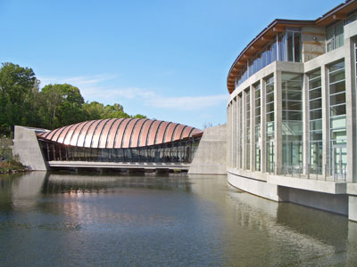
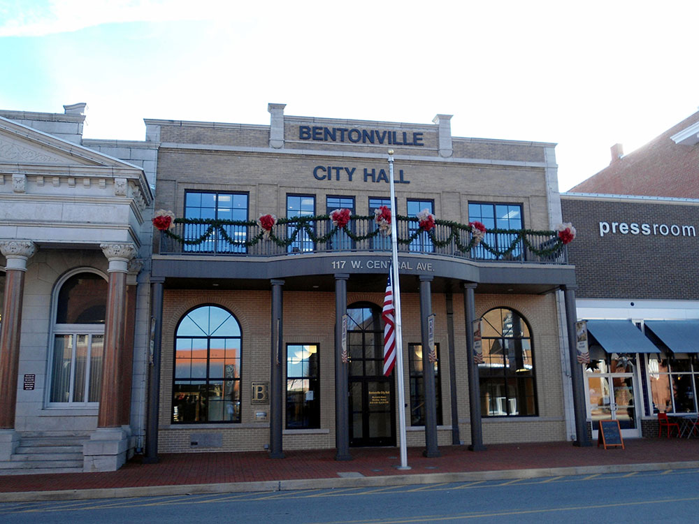
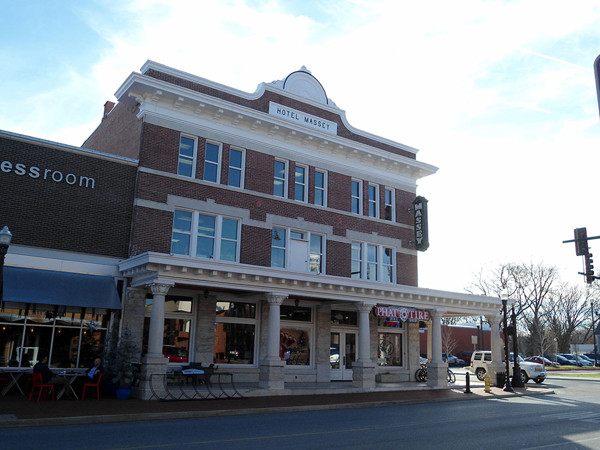

.jpg){kind=link}
Thriving cultural and business destination blends world-class museums, public art, outdoor recreation, and a vibrant downtown with a rich entrepreneurial heritage.
Parks, museums, restaurants, and attractions maintain individual operating hours
Individual attractions may charge admission
Summer for festivals and recreation
Fall for colorful foliage and cycling
Winter for holiday events and museums
How to Get There
From Rogers (8 mi): Take I-49 north to Bentonville, exit toward downtown, and follow signs to the city center and Bentonville Square.
Overview
Bentonville is a city in the northwest corner of Arkansas, in the Ozark Mountains, and it is best known as the headquarters of Walmart, the world's largest retailer, founded by Sam Walton, whose first store was in nearby Rogers. It has been transformed in recent decades into a destination for art and the outdoors, with the world-class Crystal Bridges Museum of American Art and some of the best mountain biking in the country. The city combines a historic town square with a modern, cosmopolitan feel.
Visitors come to Bentonville for Crystal Bridges and The Momentary, for the Walmart Museum on the town square, and for the Bachman-Wilson House by Frank Lloyd Wright. They also come for mountain biking on trails such as Slaughter Pen and the Razorback Greenway, for the restaurants and boutique hotels of downtown Bentonville, and the Pea Ridge National Military Park is a short drive away.
History
Bentonville was founded in 1837 as the county seat of Benton County and named for Senator Thomas Hart Benton of Missouri, and it grew as a small farming community. During the Civil War, the Battle of Pea Ridge was fought nearby in March 1862, a Union victory that helped secure Missouri, and Bentonville was occupied by both armies. In 1950, Sam Walton opened Walton's Five and Dime on the town square, and in 1962 he opened the first Walmart in nearby Rogers; the company moved its headquarters to Bentonville and grew into the largest company in the world. In 2011, Alice Walton opened Crystal Bridges, which has made the city a cultural center.
Sightseeing and Popular Landmarks
Crystal Bridges is set in a woodland ravine and designed by Moshe Safdie, with pavilions that span a spring-fed creek and a collection that includes works by Norman Rockwell, Georgia O'Keeffe, and Andy Warhol, and admission is free. The Walmart Museum is in the original Walton's Five and Dime on the square and tells the story of the company and its founder. The Bachman-Wilson House, a Usonian house by Frank Lloyd Wright, was moved from New Jersey to the Crystal Bridges grounds, and the downtown square has shops, restaurants, and the 21c Museum Hotel.
Culture and Museums
Crystal Bridges is the major cultural attraction, and its sister venue, The Momentary, is a contemporary art space in a former cheese factory with galleries, performances, and a restaurant. The Walmart Museum, the Bentonville Film Festival, and the Scott Family Amazeum, a children's science museum, are also popular. The city hosts events such as the Bentonville Film Festival and the Bentonville Farmers Market, and the Walmart AMP is a large outdoor concert venue.
Parks
Bentonville has been called the "Mountain Biking Capital of the World" and has more than 300 miles of trails in the area. The Slaughter Pen Trail System is a network of mountain biking trails, and the Razorback Regional Greenway is a 36-mile paved trail that links Bentonville and Fayetteville. Crystal Bridges has miles of walking trails through forest and gardens, and Lake Bella Vista, Lake Bentonville, and Compton Gardens are other outdoor spaces. Beaver Lake and the Buffalo National River are within a short drive.
Seasons and Weather
Bentonville has a humid subtropical climate. Summers are hot and humid, with highs in the 90s°F, and winters are mild to cool, with highs in the 40s°F and about 8 inches of snow. Spring and fall are the best times to visit, with fall color in the Ozarks, and thunderstorms and tornadoes are possible in spring.
This article uses material from Wikipedia as well as information from official tourism and institutional sources. Key references include Visit Bentonville, Crystal Bridges Museum of American Art, The Walmart Museum, Pea Ridge National Military Park, Arkansas Tourism, and National Weather Service Tulsa. Wikipedia material is from the articles "Bentonville, Arkansas" and "Crystal Bridges Museum of American Art", and is available under the Creative Commons Attribution-Share-Alike License 3.0.
Featured Locations
Bachman-Wilson House
Mid-century modern house designed by Frank Lloyd Wright that showcases Usonian architecture through its innovative use of glass, concrete, wood, and integration with the surrounding landscape.

Charvex, CC0, via Wikimedia Commons; Image Size Adjusted

Crystal Bridges Museum of American Art
World-class art museum featuring a renowned collection of American artwork, architecturally distinctive gallery spaces, outdoor sculptures, and miles of scenic walking trails.
Walmart Museum
Interactive exhibits, original storefronts, and historical artifacts chronicle the growth of a small five-and-dime business into one of the world’s largest retail companies.

